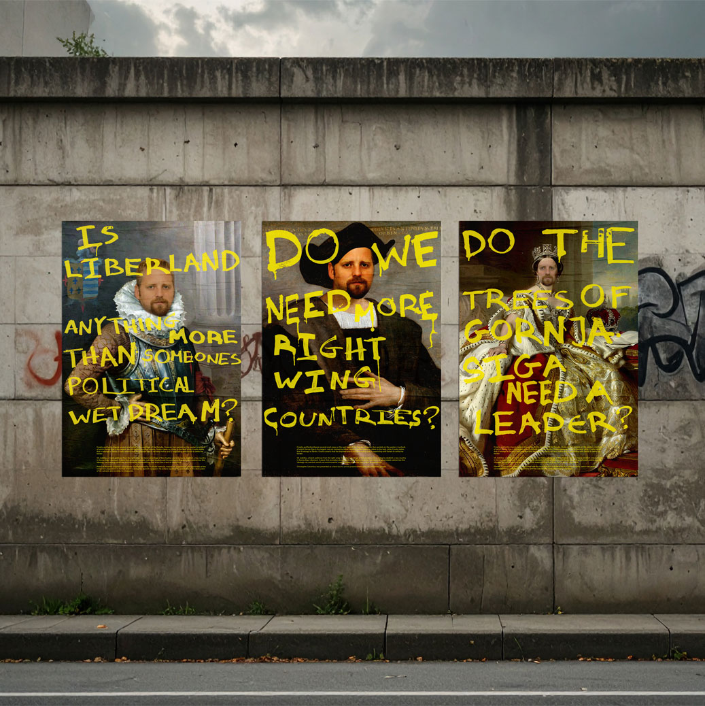
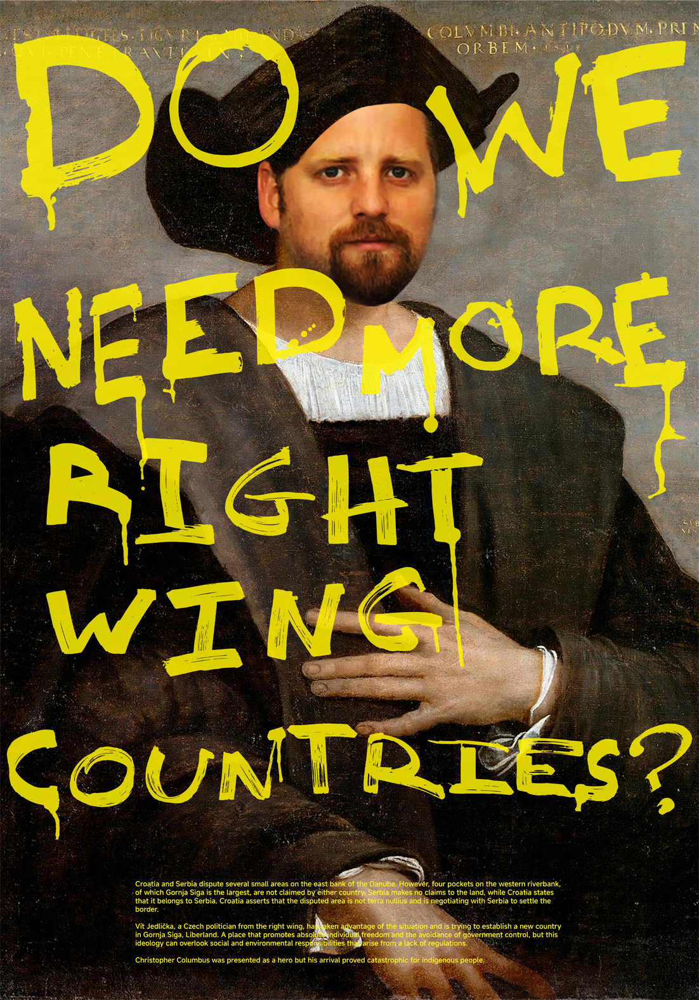
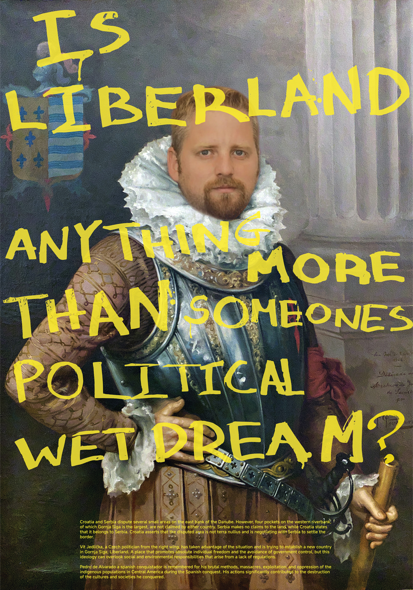
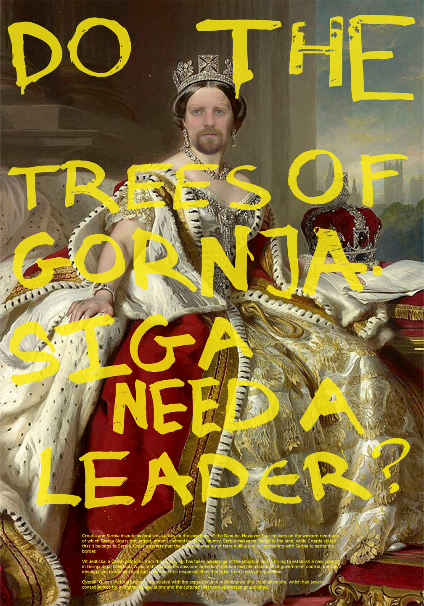

Gornja Siga
School Project / Poster Design
Croatia and Serbia dispute several small areas on the east bank of the Danube. However, four pockets on the western riverbank,
of which Gornja Siga is the largest, are not claimed by either country. Serbia makes no claims to the land, while Croatia states
that it belongs to Serbia. Croatia asserts that the disputed area is not terra nullius and is negotiating with Serbia to settle the
border.
Vít Jedlička, a Czech politician from the right wing, has taken advantage of the situation and is trying to establish a new country
in Gornja Siga, Liberland. A place that promotes absolute individual freedom and the avoidance of government control, but this
ideology can overlook social and environmental responsibilities that arise from a lack of regulations.


The posters feature famous conquerors but with Vit's face, stating how he is not better than people historically known for destroying the culture and environment of the places they invaded. The yellow color used for the tags on paintings is the color of Jedlicka's ideology, anachro-capitalism and the way they "vandalize" art symbolises his plan for Gornja's virginal nature. The paper used for printing mimics the texture of a canvas.

Christopher Columbus was presented as a hero but his arrival proved catastrophic for indigenous people.

Pedro de Alvarado a spanish conquistador is remembered for his brutal methods, massacres, exploitation, and oppression of the indigenous populations in Central America during the Spanish conquest. His actions significantly contributed to the destruction of the cultures and societies he conquered.

Overall, Queen Victoria's reign is associated with the expansion and maintenance of a colonial empire, which had severe consequences for indigenous populations and the cultures that were oppressed or exploited.